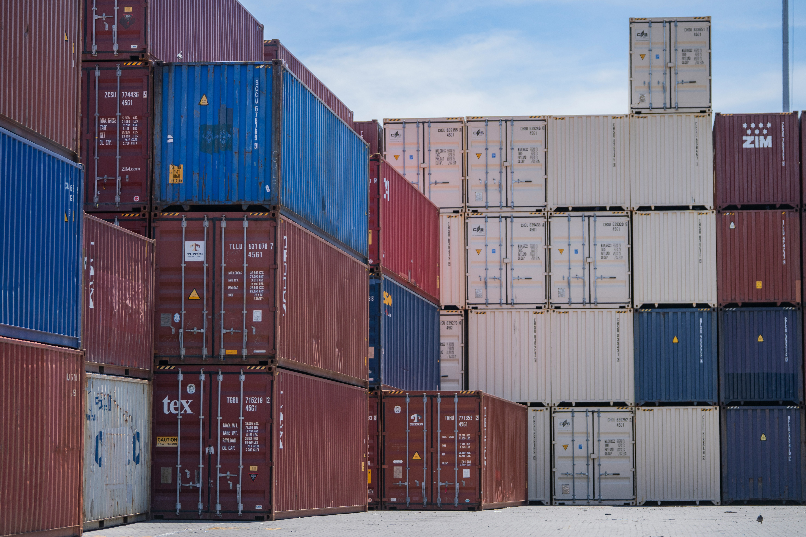
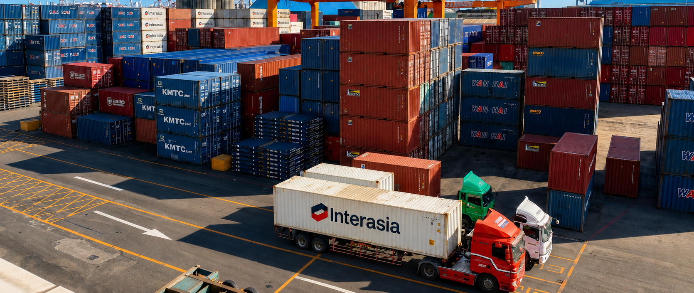
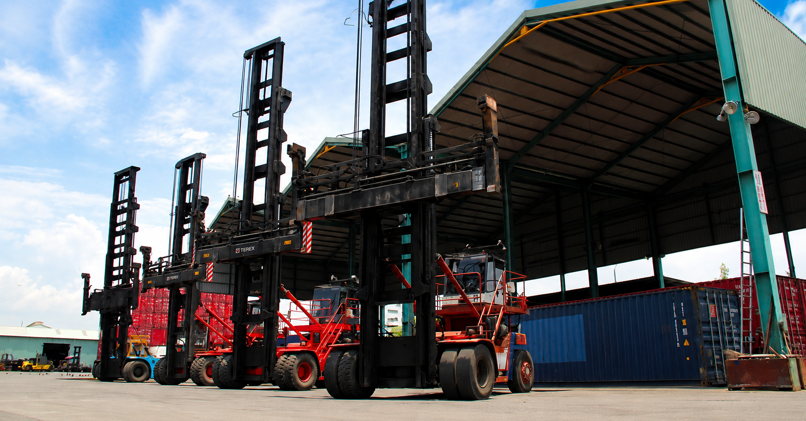
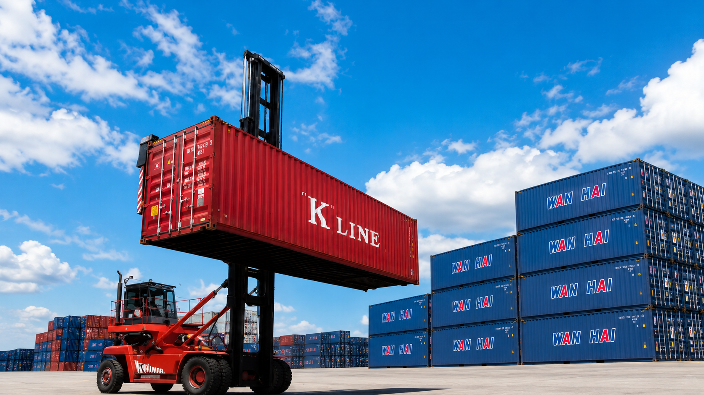
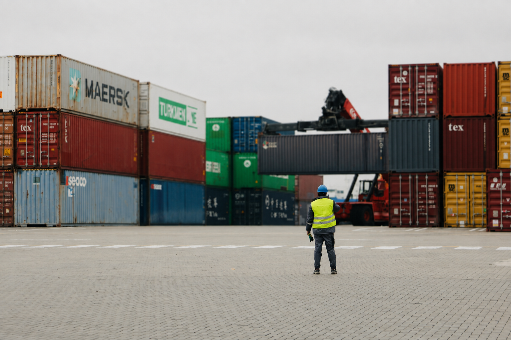

廠區面積約 7.69 公頃，場區設置 24 小時 CCTV 監控與出入口管制，保障貨物與人員安全。場區依作業需求規劃貨櫃堆置區域與動線，確保車輛通行順暢、作業安全有序。

廠區依作業需求配置多元化機具設備，並定期保養維護，維持設備妥善率與作業穩定性。
註：機具設備將依作業需求及使用年限不定期汰換更新。

亞太位於高雄港後線核心基地，擁有充足廠域與專業機具支撐月度高強度作業量能，確保貨櫃流轉高效穩定。

亞太將人員安全與健康置於日常營運的重要位置。面對貨櫃場、倉儲、機具維修及車輛往來等不同作業情境，我們持續把安全要求納入作業規劃與現場管理。
亞太座落於高雄港第三貨櫃中心後線，鄰近小港國際機場、高速公路與各貨櫃中心，具備絕佳地理優勢。
亞太至各目標地點的距離